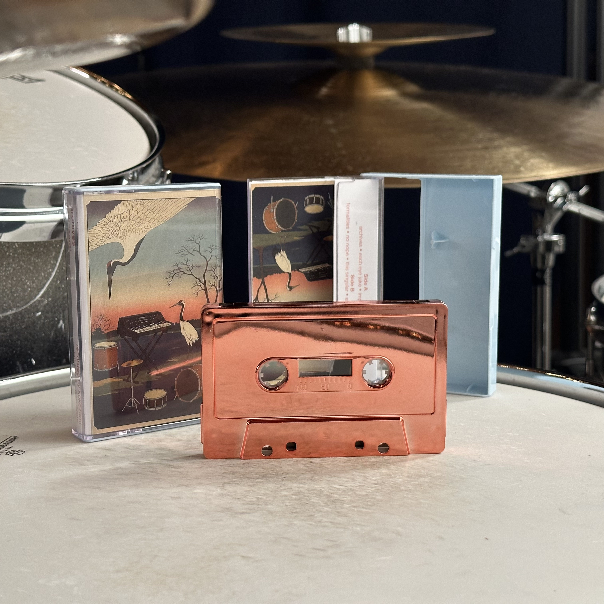
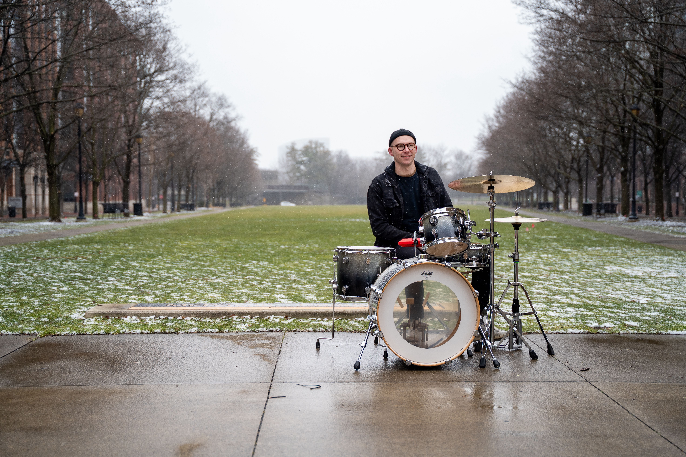

kokozami started as a way for me to use drumming and producing as an outlet for thoughts, memories, restlessness and exploration. the music pulls from jazz fusion, post-rock, and electronic influences, but it’s really just me trying to find sounds that feel honest and fit for the moment.
when recording these songs, i typically start with improvising on drums until i find something worth while that sticks around, then layer the bass, synths and textures to compliment the drum tracks. often, the new bass and synth parts inspire altered drum parts, triggering a pen-pal-style conversation between the drums and the synths until one cohesive song emerges.



